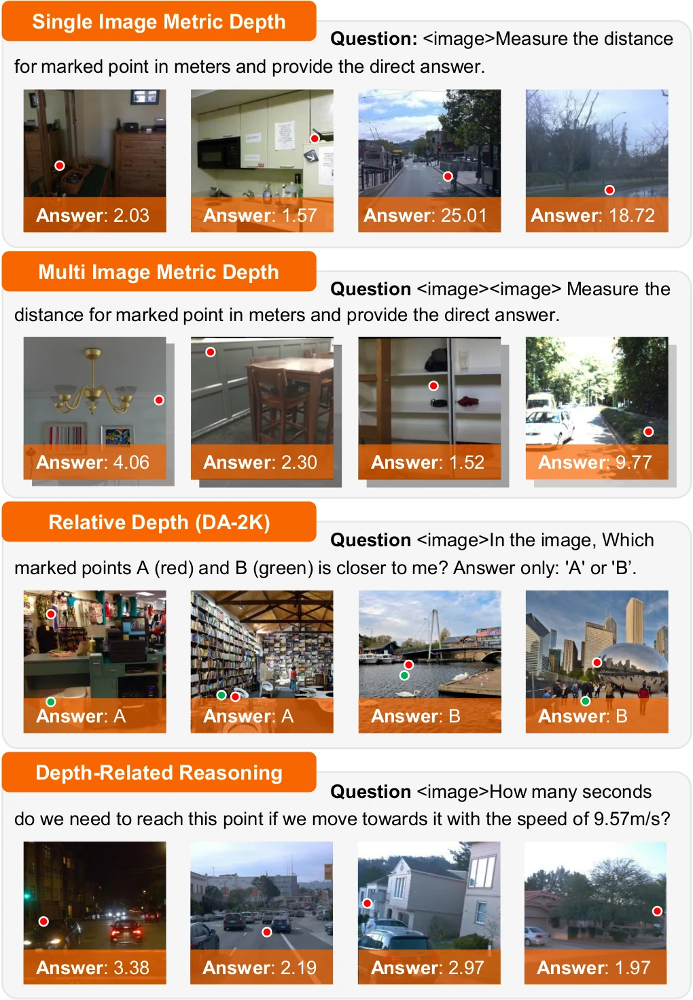
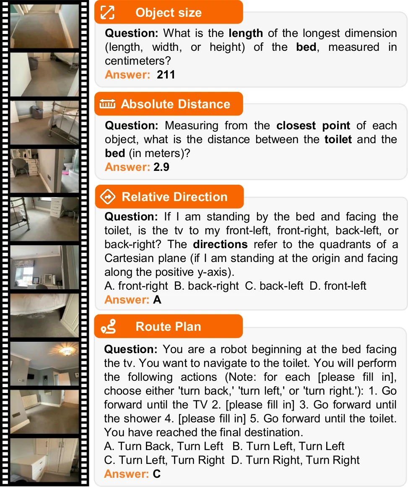
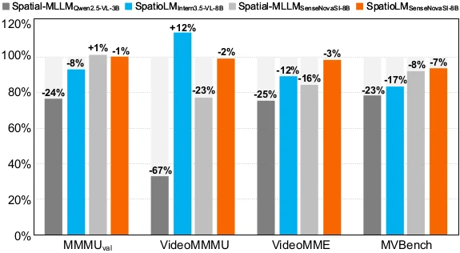
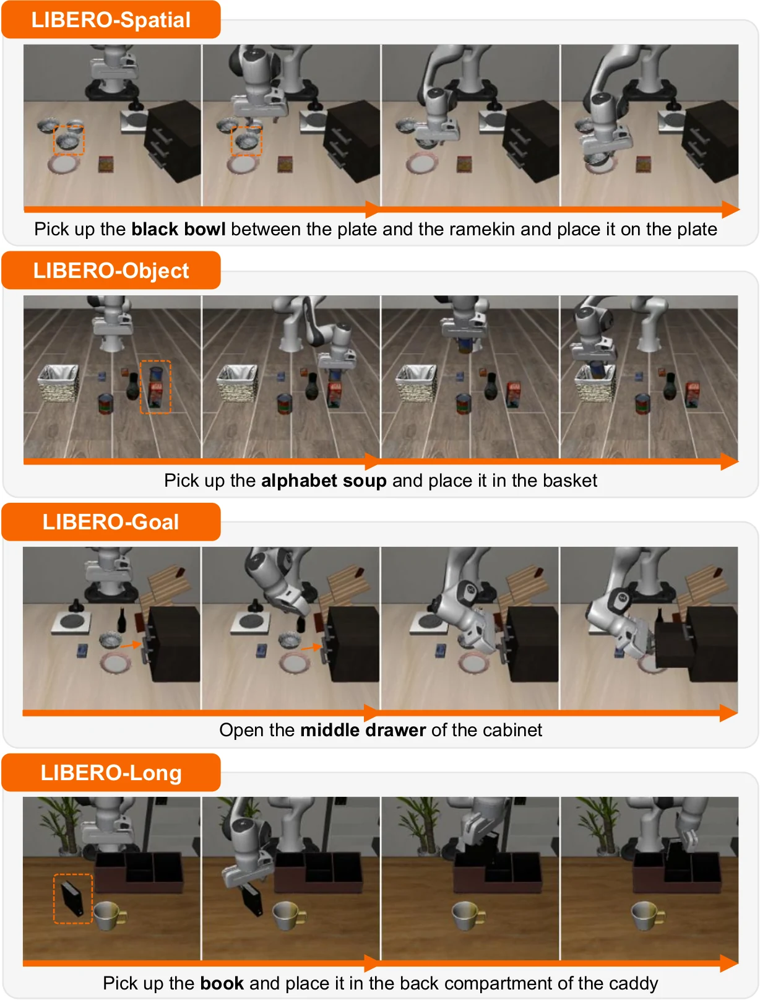
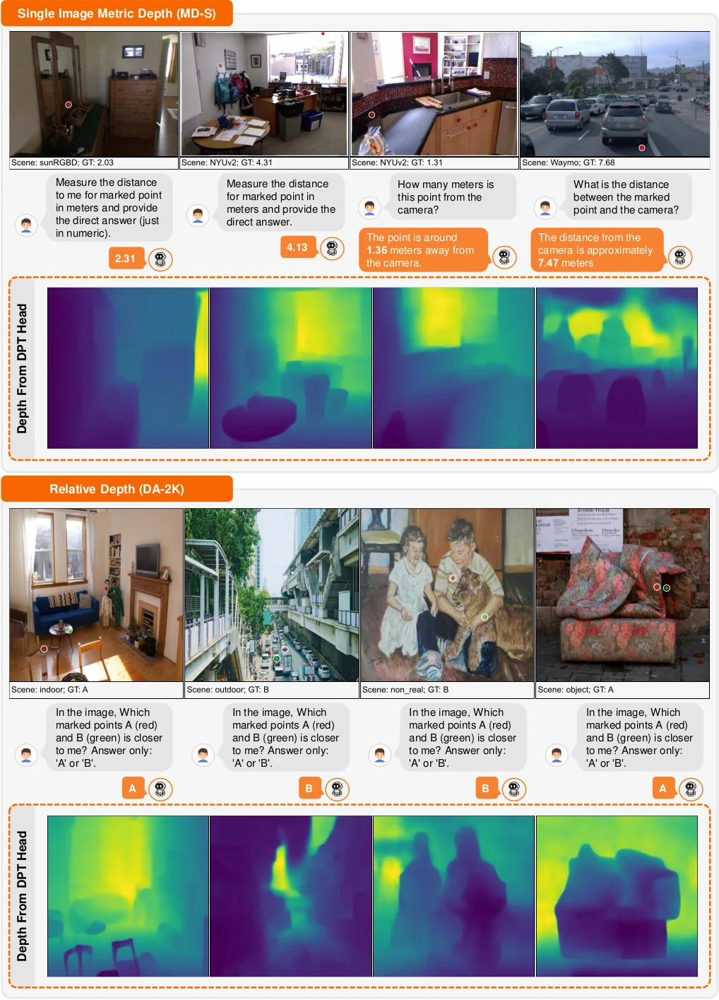
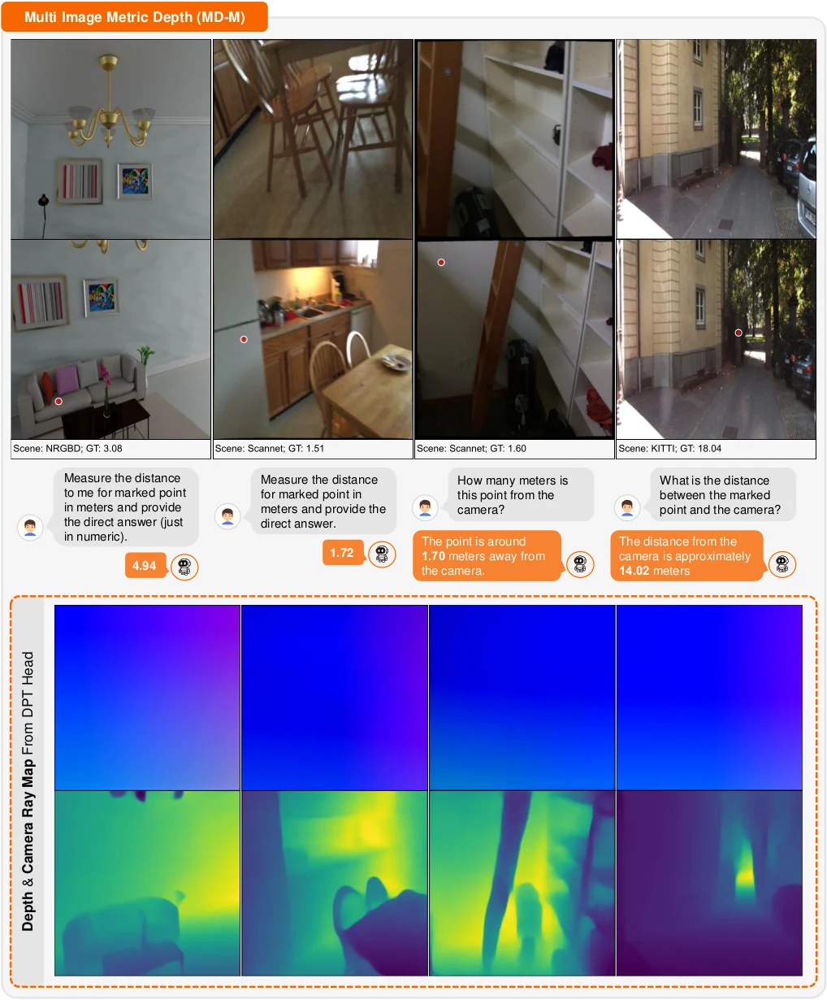
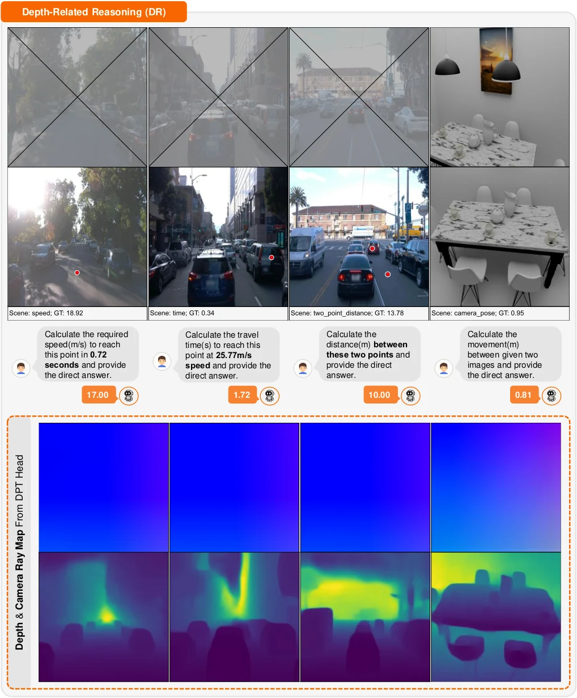
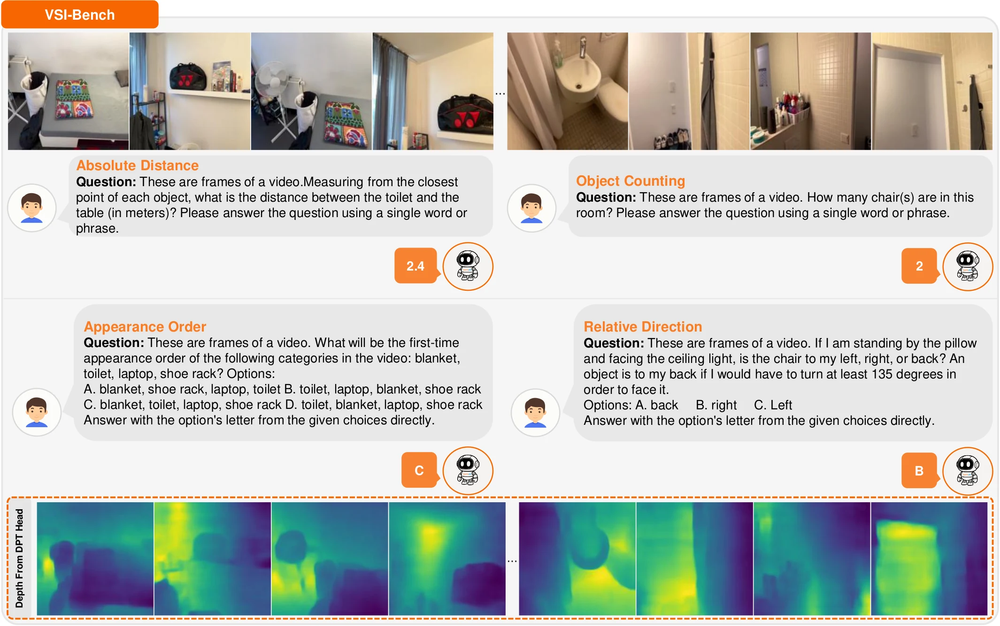
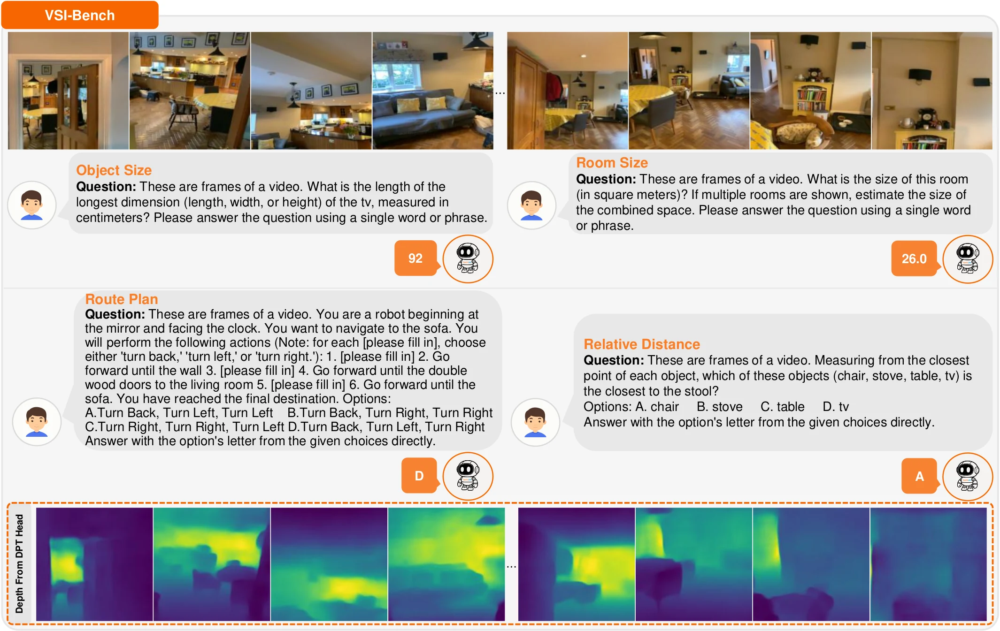

Perception
Reason about metric depth, distance, speed, and physically grounded visual measurements.
A plug-and-play spatial enhancement for vision-language models that learns physically coherent representations from pseudo depth and camera supervision, while requiring only RGB inputs at inference.

01 / Overview
Vision-language models are strong semantic reasoners, but their spatial representations remain weak. Existing approaches often add explicit 3D priors or third-party spatial encoders, increasing complexity and weakening general-purpose capabilities after fine-tuning.
SpatioLM introduces a parameter-efficient, non-invasive Spatio-Vision Module that elicits spatial knowledge already present in a pretrained VLM. During training, pseudo depth and camera information guide the model toward physically coherent representations. At inference, the model operates directly on images or video, without extra 3D inputs.
Across spatial perception, spatial understanding, and embodied manipulation, the framework delivers broad gains while limiting degradation of the base model's general capabilities. On VSI-Bench, SpatioLM reaches 71.6, the first reported score above 70.
Reason about metric depth, distance, speed, and physically grounded visual measurements.
Resolve object relations, room geometry, temporal order, and multi-view spatial structure.
Transfer learned spatial representations to discrete and continuous manipulation policies.
02 / Method
The Spatio-Vision Module is inserted alongside selected vision-language blocks and trained with geometric supervision, preserving the pretrained VLM path.

Reuse pretrained visual tokens instead of attaching a separate spatial encoder.
Distill token, depth, and camera-ray knowledge from a geometry teacher during training.
Keep the underlying VLM frozen and activate spatial reasoning only when needed.
03 / Experiments
SpatioLM is evaluated against proprietary, open-source, and spatial-specialized models across four perception benchmarks, three spatial understanding benchmarks, general VLM tasks, and LIBERO.
MD-S over SenseNovaSI-8B
First VSI-Bench result above 70
ScanQA CIDEr
LIBERO average success

Spatial perception
MD-S and MD-M use δ < 1.25. DA-2K and DR report accuracy. Higher is better.
| Method | MD-S | MD-M | DA-2K | DR |
|---|---|---|---|---|
| Proprietary models | ||||
| GPT-5.2 | 15.5 | 21.4 | 56.0 | 11.2 |
| Gemini-2.5 Flash | 28.6 | 28.7 | 75.5 | 9.87 |
| Qwen3-VL Plus | 37.6 | 37.9 | 79.4 | 17.5 |
| Doubao-1.5 Thinking | 52.6 | 41.1 | 80.7 | 13.6 |
| Open-source models | ||||
| LLaVA-NeXT-Video-7B | 9.24 | 10.0 | 51.2 | 6.46 |
| Qwen2.5-VL-72B | 32.9 | 31.5 | 64.0 | 12.4 |
| InternVL3.5-8B | 41.0 | 28.3 | 60.3 | 10.2 |
| Qwen3-VL-235B-A22B | 48.4 | 39.9 | 73.4 | 17.2 |
| Specialized spatial models | ||||
| Cosmos-R1-7B | 19.4 | 25.4 | 53.1 | 7.01 |
| VST-7B-SFT | 51.0 | 26.3 | 83.8 | 10.9 |
| Cambrian-S-7B | 3.09 | 3.21 | 53.7 | 1.74 |
| SenseNovaSI-8B | 52.6 | 37.7 | 71.8 | 17.5 |
| DepthLM (Pixtral-12B) | 18.0 | 40.0 | - | 11.9 |
| SpatioLM | ||||
| SpatioLMInternVL3.5-8B | 50.9 | 32.0 | 81.7 | 24.1 |
| SpatioLMSenseNovaSI-8B | 83.5 | 69.0 | 83.8 | 41.8 |
Best and runner-up results are bolded and underlined. API and open-source baselines marked with * in the paper were re-evaluated under official settings.

Spatial understanding
Eight categories spanning configuration, metric estimation, navigation, and spatiotemporal reasoning.
| Method | Avg. | Obj. count | Abs. dist. | Obj. size | Room size | Rel. dist. | Rel. dir. | Route plan | Appr. order |
|---|---|---|---|---|---|---|---|---|---|
| Proprietary and open-source models | |||||||||
| GPT-4o | 34.0 | 46.2 | 5.3 | 43.8 | 38.2 | 37.0 | 41.3 | 31.5 | 28.5 |
| Gemini-2.5 Pro | 51.5 | 43.8 | 34.9 | 64.3 | 42.8 | 61.1 | 47.8 | 45.9 | 71.3 |
| LLaVA-OneVision-72B | 40.2 | 43.5 | 23.9 | 57.6 | 37.5 | 42.5 | 39.9 | 32.5 | 44.6 |
| LLaVA-NeXT-Video-72B | 40.9 | 48.9 | 22.8 | 57.4 | 35.3 | 42.4 | 36.7 | 35.0 | 48.6 |
| InternVL3.5-8B | 56.1 | 70.7 | 43.3 | 68.1 | 63.6 | 55.6 | 49.1 | 36.6 | 61.5 |
| Qwen2.5-VL-7B | 32.7 | 34.5 | 19.4 | 47.6 | 40.8 | 32.8 | 24.5 | 32.5 | 29.4 |
| Qwen3-VL-235B-A22B | 51.0 | 60.6 | 41.6 | 73.5 | 63.8 | 47.7 | 43.7 | 35.1 | 42.1 |
| Specialized spatial models | |||||||||
| Spatial-MLLM-4B | 48.4 | 65.3 | 34.8 | 63.1 | 45.1 | 41.3 | 46.2 | 33.5 | 46.3 |
| VLM-3R-7B | 60.9 | 70.2 | 49.4 | 69.2 | 67.1 | 65.4 | 80.5 | 45.4 | 40.1 |
| GS-Reasoner (w/d) | 64.7 | 69.1 | 61.9 | 70.0 | 65.7 | 65.4 | 88.9 | 44.3 | 52.3 |
| Cambrian-S-7B | 67.5 | 73.2 | 50.5 | 74.9 | 72.2 | 71.1 | 76.2 | 41.8 | 80.1 |
| VST-SFT-7B | 60.6 | 72.0 | 44.4 | 74.3 | 68.3 | 59.7 | 55.8 | 44.9 | 65.2 |
| SenseNovaSI-8B | 68.7 | 75.7 | 53.2 | 72.8 | 67.5 | 77.0 | 72.7 | 48.5 | 82.6 |
| SpatioLM | |||||||||
| SpatioLMInternVL3.5-8B | 65.0 | 76.1 | 50.9 | 73.6 | 65.1 | 73.3 | 70.1 | 44.3 | 66.9 |
| SpatioLMSenseNovaSI-8B | 71.6 | 81.9 | 55.7 | 75.2 | 71.5 | 78.2 | 74.4 | 47.9 | 87.8 |
3D question answering
ScanQA reports language metrics; SQA3D reports exact-match accuracy.
| Method | B1 | B4 | METEOR | ROUGE-L | CIDEr | E1 | ER1 |
|---|---|---|---|---|---|---|---|
| ScanQA | 30.2 | 10.1 | 13.1 | 33.3 | 64.9 | 47.2 | - |
| SQA3D | 30.5 | 11.2 | 13.5 | 34.5 | - | 46.6 | - |
| Qwen2.5-VL-72B | 26.8 | 12.0 | 13.0 | 35.2 | 66.9 | 47.0 | 50.9 |
| InternVL3.5-8B | 35.1 | 8.12 | 14.6 | 39.4 | 74.2 | 51.0 | 54.0 |
| Qwen3-VL-8B | 14.1 | 8.34 | 11.6 | 35.8 | 63.0 | 47.2 | 51.4 |
| SenseNovaSI-8B | 26.4 | 0.00 | 13.4 | 37.6 | 70.0 | 47.8 | 50.1 |
| VST-7B-SFT | 8.43 | 0.50 | 9.63 | 41.9 | 82.1 | 45.7 | 48.7 |
| Spatial-MLLM-4B | 44.4 | 14.8 | 18.4 | 45.0 | 91.8 | 55.9 | 58.7 |
| SpatioLMInternVL3.5-8B | 45.4 | 16.2 | 19.0 | 47.5 | 98.2 | 55.3 | 57.7 |
| SpatioLMSenseNovaSI-8B | 48.4 | 16.3 | 19.8 | 48.9 | 101.8 | 56.5 | 58.6 |

General-purpose capability
Across VideoMME, MVBench, MMMU, and VideoMMMU, both SpatioLM variants retain average performance within 4% of their frozen base models. Spatial-MLLM drops by 44% under the same aggregate view.
| Method | Avg. | VideoMME | MVBench | MMMU | VMMMU-P | VMMMU-C | VMMMU-A |
|---|---|---|---|---|---|---|---|
| Base InternVL3.5-8B | 52.8 | 65.2 | 73.2 | 56.3 | 35.7 | 50.7 | 35.7 |
| SpatioLMInternVL3.5-8B | 50.5 -4% | 57.7 | 60.5 | 51.8 | 35.0 | 42.0 | 55.7 |
| Base SenseNovaSI-8B | 49.8 | 62.5 | 65.6 | 50.6 | 53.0 | 36.3 | 30.7 |
| SpatioLMSenseNovaSI-8B | 48.1 -3% | 60.7 | 60.7 | 50.1 | 51.7 | 33.7 | 31.7 |
| Base Qwen2.5-VL-3B | 49.8 | 58.5 | 67.0 | 47.2 | 56.3 | 39.7 | 30.3 |
| Spatial-MLLMQwen2.5-VL-3B | 27.9 -44% | 43.6 | 51.9 | 35.7 | 10.0 | 7.33 | 18.7 |

Embodied manipulation
| Method | Pretrain | Action | Spatial | Object | Goal | Long | Avg. |
|---|---|---|---|---|---|---|---|
| OpenVLA | Yes | D | 84.7 | 88.4 | 79.2 | 53.7 | 76.5 |
| SpatialVLA | Yes | D | 88.2 | 88.9 | 78.6 | 55.5 | 78.1 |
| π0-FAST | Yes | D | 96.4 | 96.8 | 88.6 | 60.2 | 85.5 |
| FlowVLA | No | D | 93.2 | 95.0 | 91.6 | 72.6 | 88.1 |
| UniVLA | Yes | D | 96.5 | 96.8 | 95.6 | 92.0 | 95.2 |
| SmolVLA | No | C | 93.0 | 94.0 | 91.0 | 77.0 | 88.8 |
| OpenVLA-OFT | No | C | 94.3 | 95.2 | 91.7 | 86.5 | 91.9 |
| GR00T-N1 | Yes | C | 94.4 | 97.6 | 93.0 | 90.6 | 93.9 |
| π0 | Yes | C | 96.8 | 98.8 | 95.8 | 85.2 | 94.2 |
| DepthVLA | No | C | 96.4 | 98.0 | 95.8 | 89.2 | 94.9 |
| SenseNovaSI-VLA0 | No | D | 93.8 | 84.0 | 79.4 | 59.4 | 79.2 |
| SenseNovaSI-OFT | No | C | 92.2 | 98.6 | 96.4 | 93.8 | 95.3 |
| SpatioLM-VLA0 | No | D | 95.6 | 97.2 | 92.8 | 78.6 | 91.0 |
| SpatioLM-OFT | No | C | 93.4 | 99.0 | 97.8 | 94.8 | 96.3 |
D: discrete actions. C: continuous actions. SpatioLM uses a 2B backbone without large-scale robot manipulation pretraining.
04 / Qualitative Results
Examples expose both final language answers and intermediate depth or camera-ray representations across images and videos.
Spatial perception
| Method | MD-S | MD-M | DA-2K | DR |
|---|---|---|---|---|
| Representative baselines | ||||
| GPT-5.2 | 15.5 | 21.4 | 56.0 | 11.2 |
| Gemini-2.5 Flash | 28.6 | 28.7 | 75.5 | 9.87 |
| Qwen3-VL Plus | 37.6 | 37.9 | 79.4 | 17.5 |
| InternVL3.5-8B | 41.0 | 28.3 | 60.3 | 10.2 |
| VST-7B-SFT | 51.0 | 26.3 | 83.8 | 10.9 |
| SenseNovaSI-8B | 52.6 | 37.7 | 71.8 | 17.5 |
| SpatioLM | ||||
| SpatioLMInternVL3.5-8B | 50.9 | 32.0 | 81.7 | 24.1 |
| SpatioLMSenseNovaSI-8B | 83.5 | 69.0 | 83.8 | 41.8 |
MD-S and MD-M use δ < 1.25; DA-2K and DR report accuracy. Higher is better.
Spatial understanding
| Method | Avg. | Obj. count | Abs. dist. | Obj. size | Room size | Rel. dist. | Rel. dir. | Route | Order |
|---|---|---|---|---|---|---|---|---|---|
| Representative baselines | |||||||||
| GPT-4o | 34.0 | 46.2 | 5.3 | 43.8 | 38.2 | 37.0 | 41.3 | 31.5 | 28.5 |
| Gemini-2.5 Pro | 51.5 | 43.8 | 34.9 | 64.3 | 42.8 | 61.1 | 47.8 | 45.9 | 71.3 |
| InternVL3.5-8B | 56.1 | 70.7 | 43.3 | 68.1 | 63.6 | 55.6 | 49.1 | 36.6 | 61.5 |
| GS-Reasoner | 64.7 | 69.1 | 61.9 | 70.0 | 65.7 | 65.4 | 88.9 | 44.3 | 52.3 |
| Cambrian-S-7B | 67.5 | 73.2 | 50.5 | 74.9 | 72.2 | 71.1 | 76.2 | 41.8 | 80.1 |
| SenseNovaSI-8B | 68.7 | 75.7 | 53.2 | 72.8 | 67.5 | 77.0 | 72.7 | 48.5 | 82.6 |
| SpatioLM | |||||||||
| SpatioLMInternVL3.5-8B | 65.0 | 76.1 | 50.9 | 73.6 | 65.1 | 73.3 | 70.1 | 44.3 | 66.9 |
| SpatioLMSenseNovaSI-8B | 71.6 | 81.9 | 55.7 | 75.2 | 71.5 | 78.2 | 74.4 | 47.9 | 87.8 |
Eight categories cover measurement, configuration, navigation, and spatiotemporal reasoning.
Supplementary visualizations





05 / Appendix Analysis
Supplementary experiments isolate parameter efficiency, supervision, architecture choices, cross-domain depth gains, and remaining temporal limitations.
The non-invasive side path is stronger than directly adapting the backbone.
| Method | VSI | ScanQA C | SQA3D ER1 |
|---|---|---|---|
| LoRA, r=16, α=64 | 69.8 | 97.2 | 55.7 |
| SpatioLM | 71.6 | 101.8 | 58.6 |
VTS and dense geometric supervision provide complementary gains.
| SV | VTS | DGS | MD-S | DA-2K | VSI |
|---|---|---|---|---|---|
| - | - | - | 52.6 | 71.8 | 68.7 |
| ✓ | - | - | 74.7 | 84.0 | 69.1 |
| ✓ | ✓ | - | 76.9 | 82.4 | 69.6 |
| ✓ | - | ✓ | 81.5 | 83.3 | 70.8 |
| ✓ | ✓ | ✓ | 83.5 | 83.8 | 71.6 |
Both backbones improve across single-image, multi-image, relative-depth, and physical-reasoning tasks.
| Backbone | MD-S | Δ | MD-M | Δ | DA-2K | Δ | DR | Δ |
|---|---|---|---|---|---|---|---|---|
| InternVL3.5-8B | 41.0 → 50.9 | +9.9 | 28.3 → 32.0 | +3.7 | 60.3 → 81.7 | +21.4 | 10.2 → 24.1 | +13.9 |
| SenseNovaSI-8B | 52.6 → 83.5 | +30.9 | 37.7 → 69.0 | +31.3 | 71.8 → 83.8 | +12.0 | 17.5 → 41.8 | +24.3 |
MD-S includes SUN RGB-D, NYU-v2, and Waymo; MD-M includes NRGBD, ScanNet, and KITTI. Several domains are strictly unseen during training.
Alternating attention improves cross-frame geometry; six SV-Blocks give the best efficiency tradeoff.
| Attention | VSI | ScanQA C | ER1 |
|---|---|---|---|
| Self | 70.4 | 98.7 | 56.8 |
| Alternating | 71.6 | 101.8 | 58.6 |
| SV-Blocks | MD-S | DA-2K | VSI |
|---|---|---|---|
| 4 | 76.5 | 82.4 | 71.3 |
| 6 | 83.5 | 83.8 | 71.6 |
| 8 | 83.0 | 83.1 | 71.7 |
| 12 | 82.9 | 83.7 | 71.5 |
Route planning remains constrained by long-horizon memory inherited from the base VLM.
| VSI task | Ours fail | Base fail | Shared | Consistency |
|---|---|---|---|---|
| Route planning | 101 | 100 | 96 | 95.0% |
| Relative direction | 120 | 166 | 64 | 53.3% |
Losses concentrate in motion and action semantics, while several scene-level reasoning tasks are preserved or improve.
| Category | Subtask | Δ InternVL3.5 | Δ SenseNovaSI |
|---|---|---|---|
| Motion dynamics | Moving direction | -30.5 | -25.0 |
| Motion dynamics | Moving attribute | -25.5 | -10.5 |
| Motion dynamics | Moving count | -24.0 | -3.5 |
| Action semantics | Action antonym | -28.0 | -28.0 |
| Action semantics | Action count | -35.5 | +5.0 |
| Scene reasoning | Episodic reasoning | +3.0 | +0.5 |
| Scene reasoning | Egocentric navigation | +1.5 | -5.0 |
Selected from the full 20-subtask analysis. The paper attributes the tradeoff to geometry-oriented supervision competing with fine-grained temporal cues.
maximum VSI-Bench spread
across eight configurations
stable objective balance
06 / Open Models
Official checkpoints are released through the Xiaomi Research collection on Hugging Face.
| Checkpoint | Track | Backbone | Link |
|---|---|---|---|
| SpatioLM-Understanding-InternVL3.5 | Understanding | InternVL3.5 8B | View → |
| SpatioLM-Understanding-SenseNovaSI | Understanding | SenseNova-SI 1.1 / InternVL3 8B | View → |
| SpatioLM-Perception-InternVL3.5 | Perception | InternVL3.5 8B | View → |
| SpatioLM-Perception-SenseNovaSI | Perception | SenseNova-SI 1.1 / InternVL3 8B | View → |
| SpatioLM-Action-VLA0 | Action | SenseNova-SI 1.1 / InternVL3 2B | View → |
All checkpoints use the same SpatioLM implementation and require no additional 3D input at inference.
Browse model collection →07 / Citation
If this work supports your research, please cite the ICML 2026 paper.
@inproceedings{wu2026spatiolm,
title = {SpatioLM: Towards General Physical Spatial
Intelligence in Vision-Language Models},
author = {Wu, Jing and Wu, Jianhua and Guan, Jiayi and
Chen, Jiahong and Lu, Jinghui and Ye, Hangjun and
Gao, Bingzhao and Chen, Long},
booktitle = {International Conference on Machine Learning},
year = {2026}
}